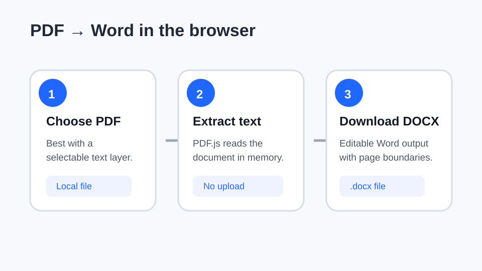
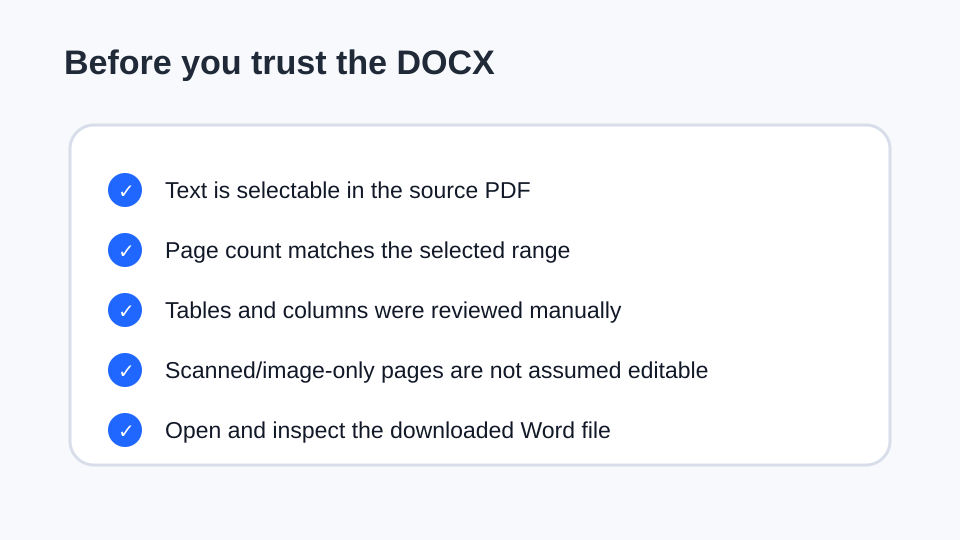

How to convert a PDF to Word
Turning a PDF into an editable Word file works best when the PDF already contains selectable text. The goal is to extract that text into a DOCX document while keeping the page sequence clear enough to edit and review.
Updated September 27, 2026 · Reviewed by FreePDF Tools

Can every PDF be converted to Word?
No. PDF is a fixed-layout format, while Word is a reflowable editing format. A text-based PDF has a useful text layer that can often be extracted. A scanned PDF may contain only page images, so converting it into editable text normally requires OCR.
FreePDF Tools' PDF-to-Word converter is designed for selectable text. It does not promise OCR or a pixel-perfect reconstruction of complex layouts.
How to convert PDF to Word online without uploading the file
- Open the PDF to Word converter.
- Select a PDF or drag it into the tool.
- Choose the first and last page when you only need part of the document.
- Run the conversion. The browser reads the PDF text layer and creates a DOCX locally.
- Download the DOCX and open it in Microsoft Word or another compatible editor.
The selected PDF is processed in the browser for this workflow, so the document bytes do not need to be uploaded to an application server.
What is preserved?
The converter prioritizes editable text and page order. Headings and ordinary paragraphs can usually be edited after conversion. Page geometry, fonts, image placement and complex tables are not recreated as a guaranteed one-to-one copy because Word and PDF represent layout differently.
What happens to tables and columns?
Simple tables can be useful starting points, but multi-column layouts, floating objects, text boxes and carefully positioned graphics may require manual cleanup. Treat the converted DOCX as an editable reconstruction, not as a promise of identical visual layout.
What about scanned PDFs?
A scan is often an image rather than a text document. When there is no meaningful text layer, a text extractor may return little or nothing. OCR is the process normally used to recognize text from the page image. FreePDF Tools does not currently include OCR in this converter.
For a scan, keep the original PDF and use a tool that explicitly provides OCR when editable recognized text is required.

Five checks before you replace the original
- Confirm that the first and last pages are present.
- Search the DOCX for a phrase you know appears in the source PDF.
- Inspect tables, columns and page breaks that matter to the document.
- Check images or diagrams that the recipient actually needs.
- Keep the source PDF until the edited Word document has been reviewed.
Ready to convert?
Use the browser-local PDF to Word tool for a text-based PDF.